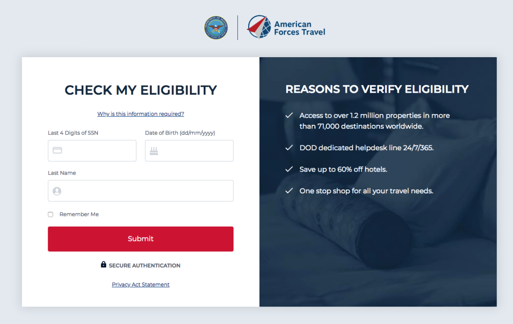
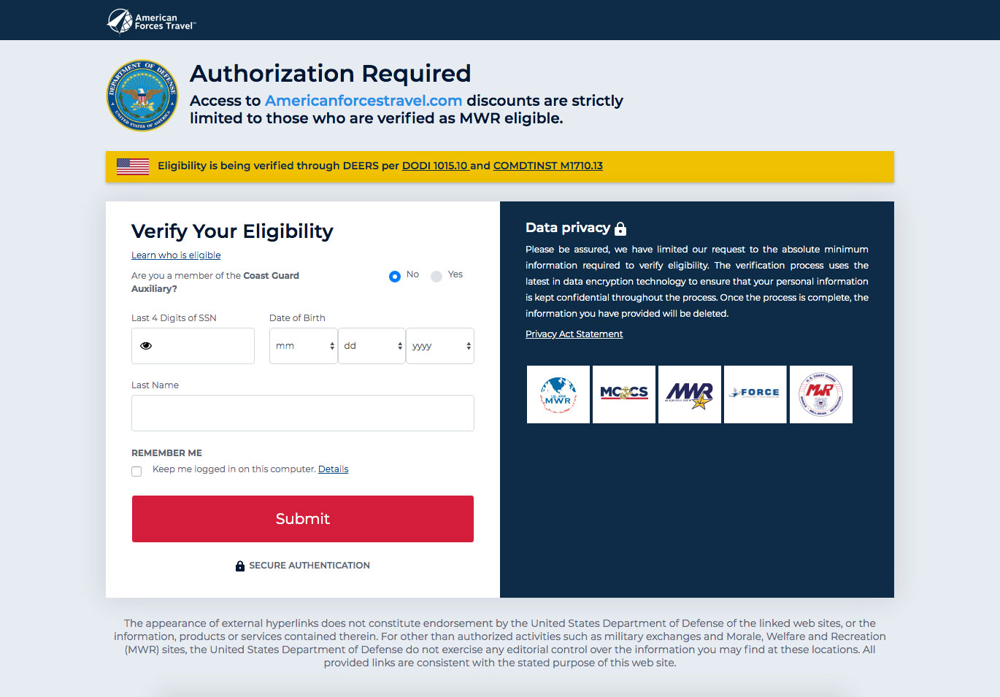

The American Forces Travel (AFT) website required military members to verify their status with the U.S. Department of Defense before they were able to view exclusive travel discounts. I had implemented user flow tracking through Google Analytics and was reviewing the data and found that a large percentage of eligible users visiting the site were not going through the authorization process so they were never seeing the travel deals available to them. I wanted to find out why and see if I could make improvements.
My Role
Analytics
User research
Prototyping
UI design
Original authorization pageUpdated authorization page design
1. Empathize
User Research
One of the methods I used to speak to military members was using usertesting.com to ask them questions. I created a user test targeting members of the military and had them visit the site and answer questions.
Usertesting.com allows us to create a 5-second test which allowed me to show the home page to a user for 5 seconds to see what immediately stood out to them.
Some of the things we were trying to learn:
When landing on the home page, do users quickly understand the value the website offers?
What do the users expect to see when they click the 'Get Started' button?
Do they understand what the site's relationship is with the Department of Defense?
When landing on the authorization page, is it clear to them why they need to go through this process?
Do they feel comfortable entering their personal information to gain access to the website's travel discounts?
2. Define
User Research
After reviewing the results of the user tests it was clear there were 2 important issues I needed to focus on for our design updates.
Issues to focus on:
Users did not understand that the website was a product of the U.S. Department of Defense.
Users were not comfortable entering their SIN number to access the website. Users were not clicking any of the links that would provide them information about their data privacy.
3. Ideate
I met with our client and the members of our account team to brainstorm some possible solutions. What made changing the site more difficult was that there were very strict legal guidelines from the Department of Defense for what type of imagery we could use and what the content needed to be. We came up with a list of changes that would likely get approval. We then started user testing those ideas.
4. Prototype
UI Design
I then created the first iteration for the new authorization page design focusing on the issues listed above.
Changes in the new design included:
Scaling back on the amount of content and visual design elements. We removed any marketing content that was promoting the value of the site and focused more on data privacy.
Updating the imagery to hopefully make the site feel more trustworthy. This included making the Department of Defense logo more prominent and included the MWR logo for each branch of the military.
Making the information about data privacy more prominent instead of hiding it behind a click.
Provide easy access to information on how their eligibility would be verified and use terms they would already be familiar with.
We used usertesting.com to test the new design with military members. The results were mostly very positive but we did find a few issues that we wanted to improve on in the final design.
Members were confused about the system being used to verify their data. Based on the design they thought we were talking about 2 separate systems. We had mentioned the DEERS system in the 2nd paragraph and then mentioned a US Gov system in the yellow bar.
When members read the 'DOD civilians (stateside) section they focused on the sentence that said the product would be available soon and assumed that they were not eligible, even though they were not DOD civilians.
The Final Design
Authorization Page
Results
We had the development team implement the new design. I reviewed the user flow data for people accessing the new site and compare it to the data for the same dates from the previous year. The new design was a large succcess. We saw an immediate increase in the number of people who were completing the authorization process resulting in more bookings.